Café em Maringá, PR Todos os dias
Um café com jardim dentro.
Pé-direito alto, plantas penduradas, janelas redondas e poltronas de couro para ficar horas. Café da manhã a partir das 8h30, almoço das 11h às 15h e, quando a noite chega, a pizza da Jacaré Vermelho.
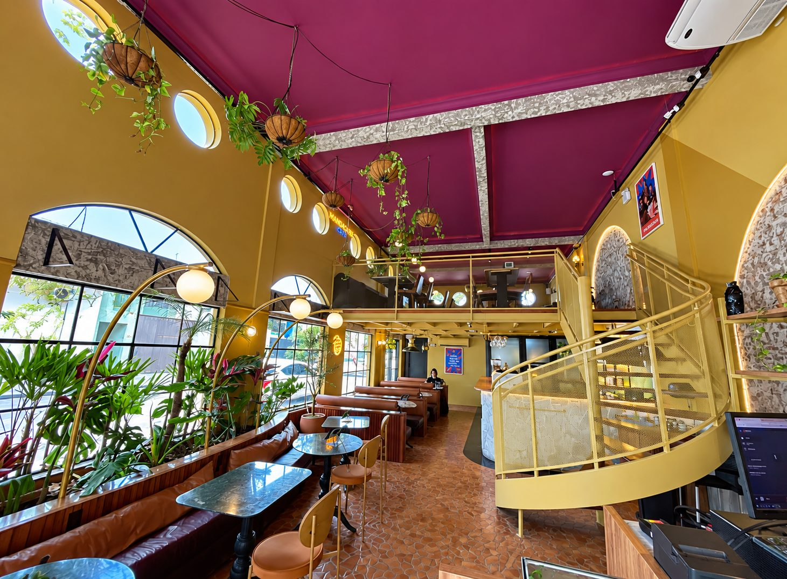
Um dia no Mandacaru
Da torrada das 8h30 à pizza da meia-noite.
A casa muda com as horas e não fecha no meio do dia. As fotos são da própria casa, com a hora marcada por ela.
-
08h30 às 19h
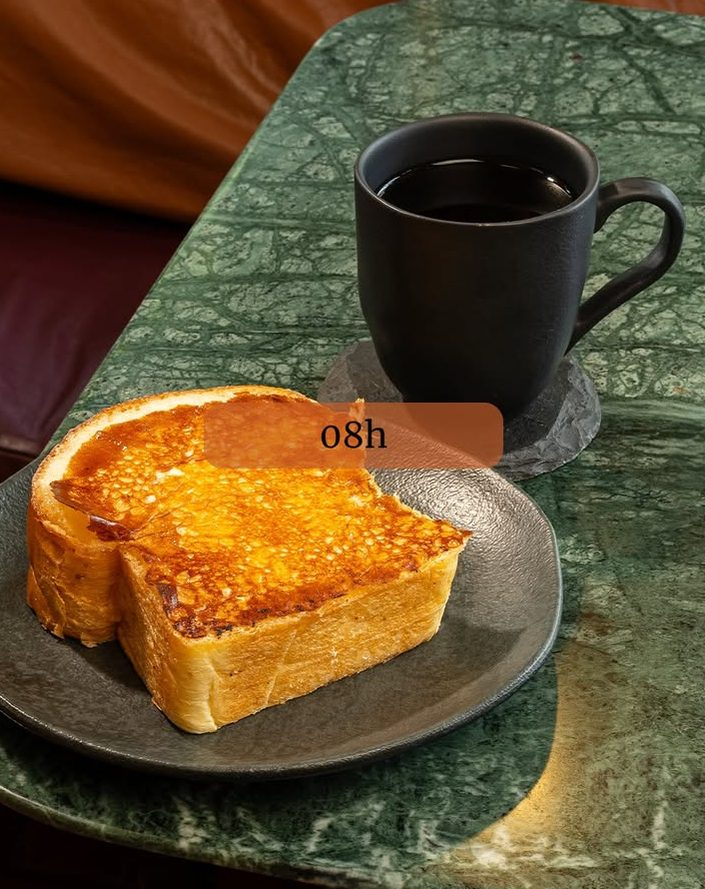
Café da manhã e café o dia todo
Pães na chapa, tortas, doces de vitrine e o café coado ou da máquina. Serve de manhã e segue até o fim da tarde.
-
11h às 15h
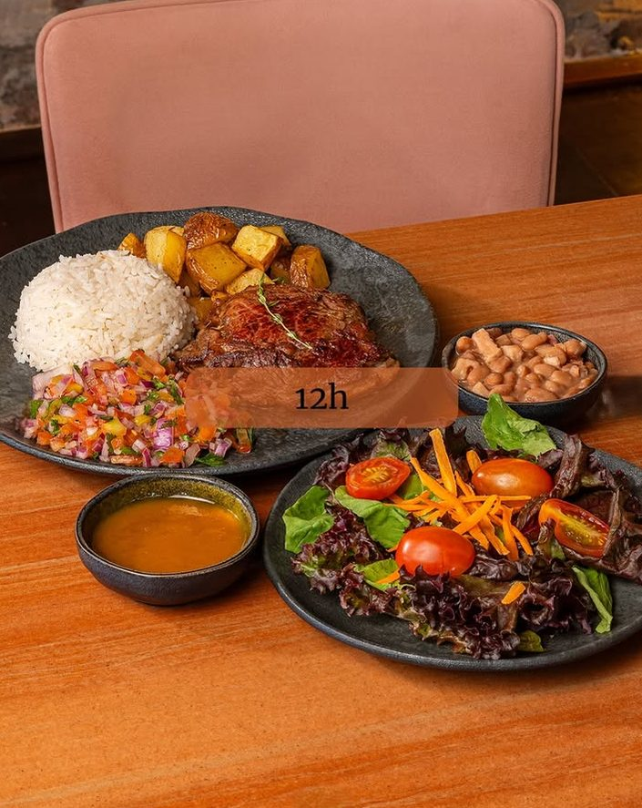
Almoço
Prato montado com arroz, feijão, carne, salada e acompanhamentos. Para almoçar com calma, na mesa de mármore.
-
15h em diante
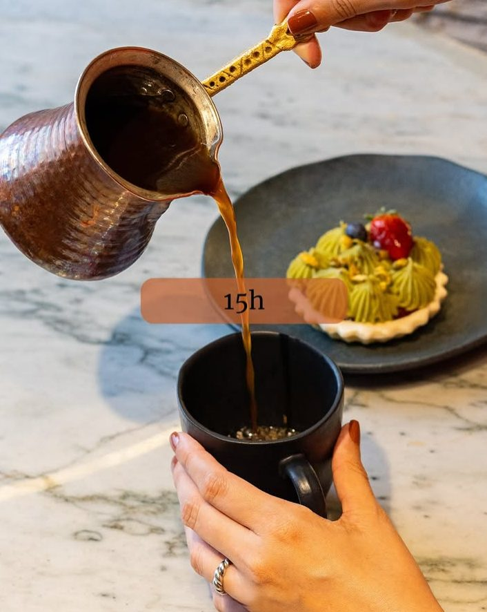
A tarde do café
Café servido na xícara com um doce ao lado. A hora de ficar mais um pouco, com o jardim em volta.
-
19h à 0h
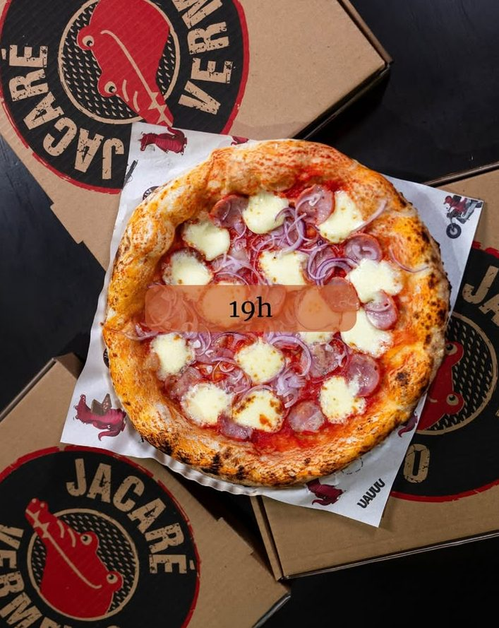
Pizza da Jacaré Vermelho
À noite a casa recebe a pizzaria Jacaré Vermelho, todos os dias, até a meia-noite.
A casa
Amarelo, vinho, verde e muita planta.
Um prédio de esquina na Av. Mandacaru com toldo listrado e porta roxa. Dentro, pé-direito alto, mezanino com escada caracol, mesas de mármore verde e plantas que descem do teto. É o ambiente que aparece em quase toda avaliação.
"O ambiente é super aconchegante, dá vontade de ficar horas."
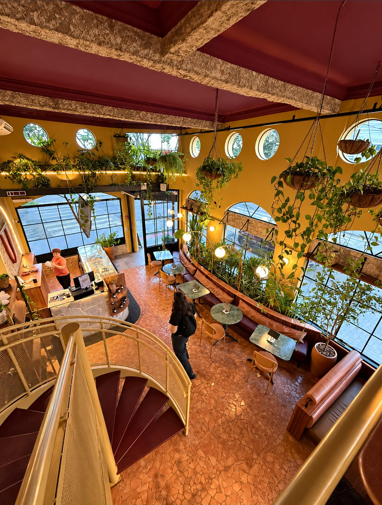
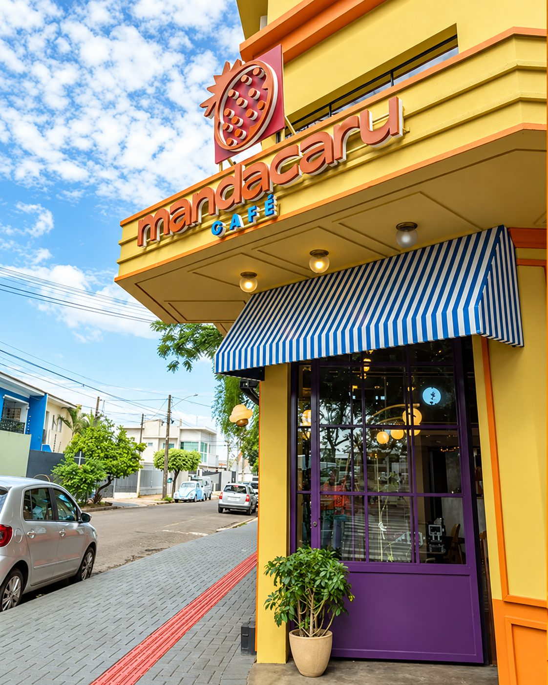
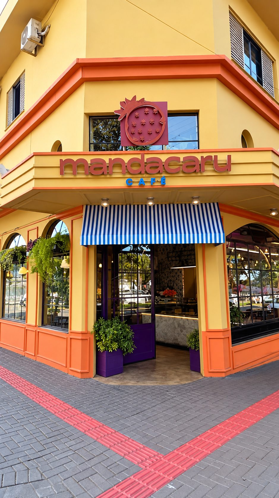
Cozinha e balcão
Do pão na chapa ao bolo da vitrine.
Fotos publicadas pela casa. "A vitrine de doces é de encher os olhos e a barriga", escreveu uma cliente. O cardápio completo, peça pelo WhatsApp.
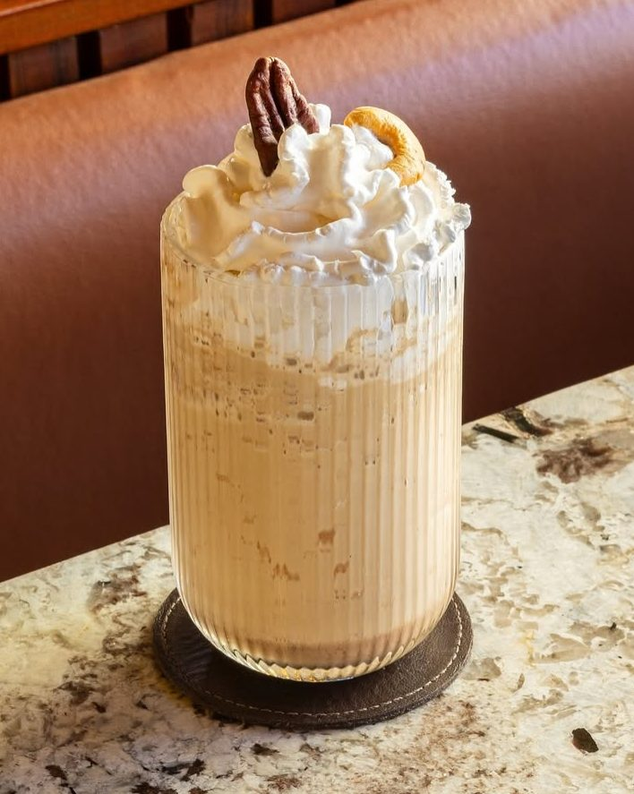
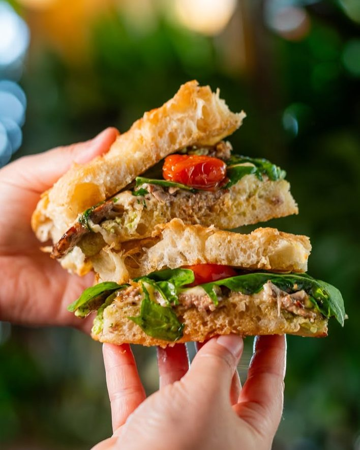
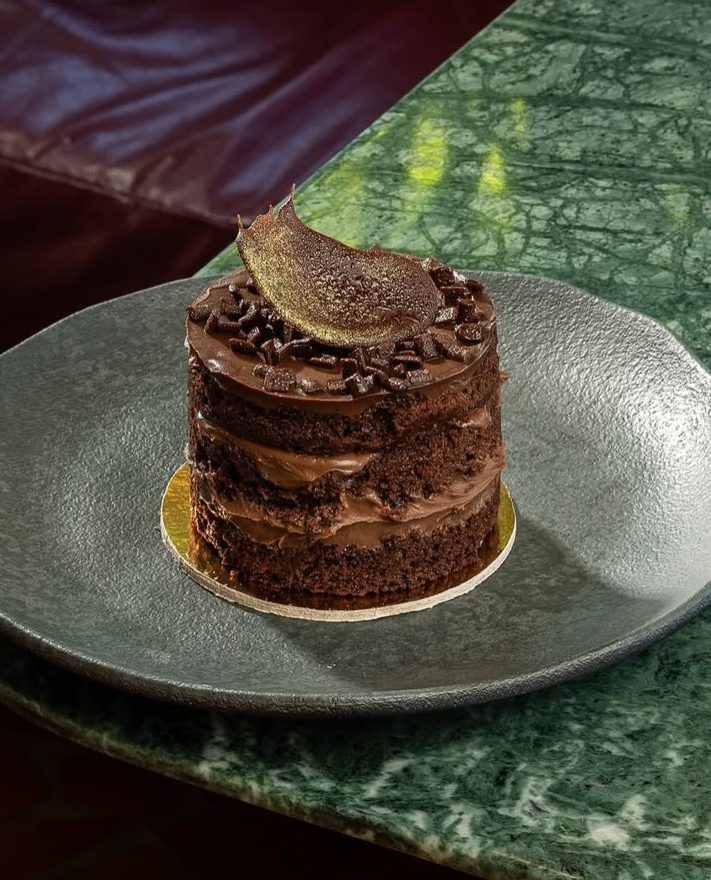
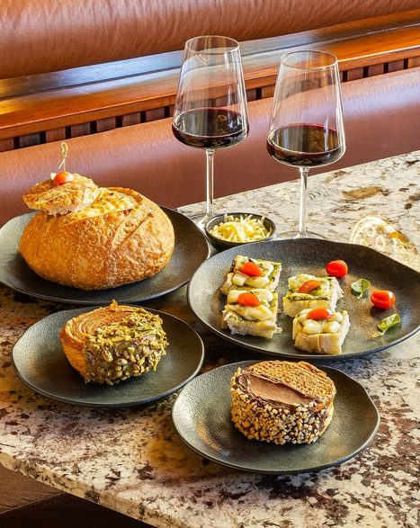
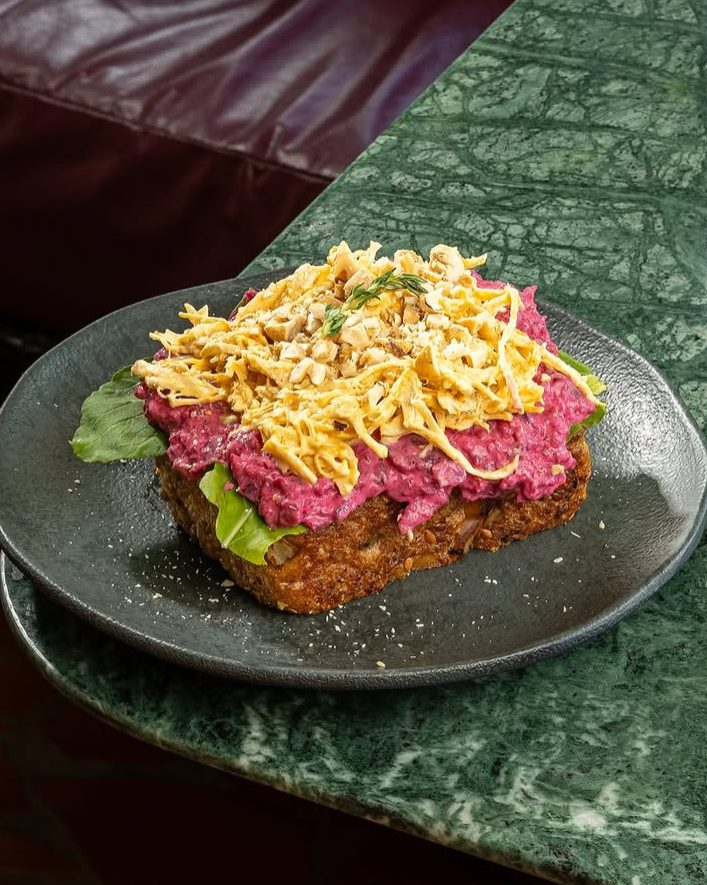
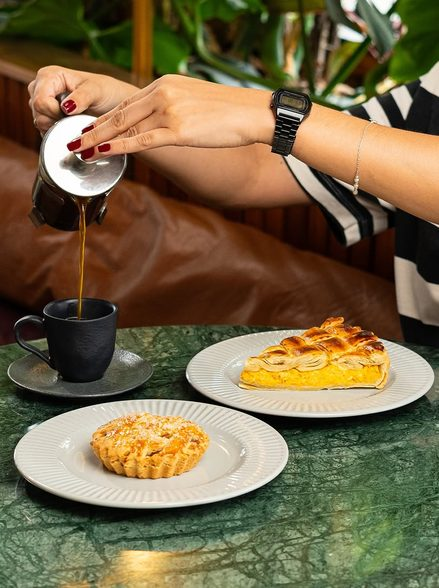
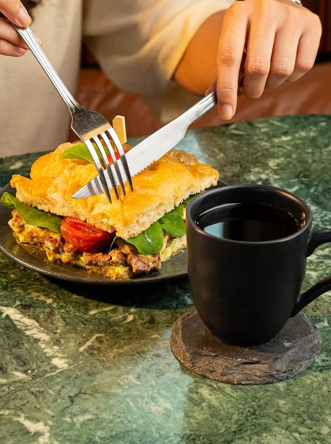
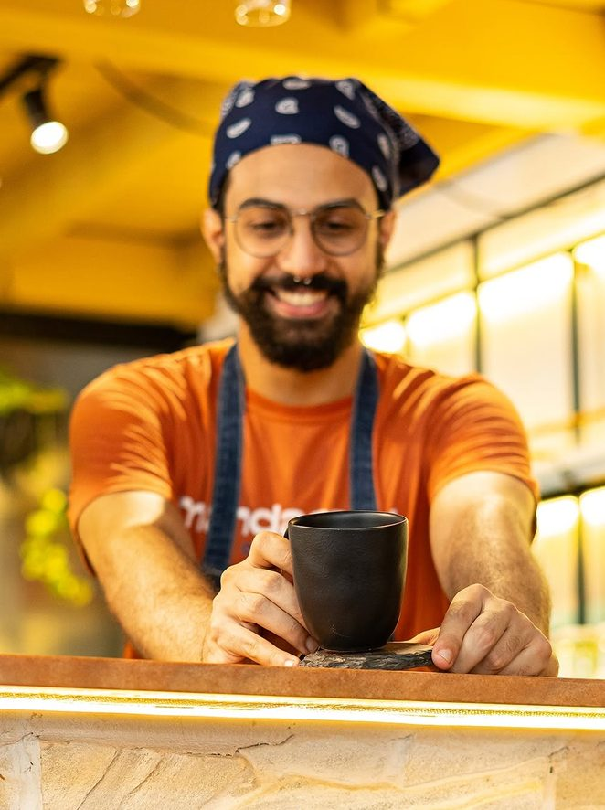
Pizza à noite
Às 19h, a casa vira a Jacaré Vermelho.
Todos os dias, das 19h à meia-noite, o salão recebe a pizzaria Jacaré Vermelho: a mesma esquina, as mesmas poltronas e o jardim aceso, agora com pizza na mesa.
4,7
em 488 avaliações no Google
Avaliações
Quase quinhentas pessoas já deram nota.
-
O ambiente é muito lindo!! Atendimento e comidas também foram ótimas.
-
Amei o Mandacaru Café! O ambiente é super aconchegante, dá vontade de ficar horas. O atendimento é maravilhoso, todo mundo muito atencioso.
-
Avaliando após minha segunda visita! Ambiente lindo, atendimento atencioso, comidas muito saborosas!!! As opções do cardápio são maravilhosas e a vitrine de doces é de encher os olhos e a barriga!!!!
Horários e endereço
Na esquina da Av. Mandacaru, 695.
| Café | 8h30 às 19h |
|---|---|
| Almoço | 11h às 15h |
| Pizza (Jacaré Vermelho) | 19h à 0h |
Todos os dias da semana. Para mesas em grupo ou dúvidas, chame no WhatsApp.
Vem tomar um café no meio das plantas.
Todos os dias, das 8h30 à meia-noite, na Av. Mandacaru, 695. Qualquer dúvida, é só chamar.